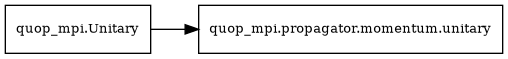

Momentum
Propagators where the state evolves in momentum space. Used for gradient-descent search algorithms inspired by continuous-variable photonic quantum computing. See Theoretical Background for details.
Propagator Class
- class quop_mpi.propagator.momentum.unitary(Ns: list[int], minsq: list[float], minsk: list[float], deltasq: list[float], deltask: list[float], *args, **kwargs)
Bases:
UnitaryImplements the QOWE mixing unitary.
This propagator uses Fourier transforms to evolve the quantum state in momentum space, applying kinetic energy evolution.
Warning
unitaryinstances of type'momentumrequire that thesizeof the MPI communicator associated withquop_mpi.Ansatzclass be a factor of the first grid dimension (Ns[0] % size == 0).Inheritance Diagram:

See
quop_mpi.Unitary.- Parameters:
- Nslist[int]
the number of grid points in each dimension of the Cartesian grid
- minsqlist[float]
the minimum of each Cartesian coordinate in position space
- minsklist[float]
the minimum of each Cartesian coordinate in momentum space
- deltasqlist[float]
the step-size in each Cartesian coordinate in position space
- deltasklist[float]
the step-size in each Cartesian coordinate in momentum space
- *args and **kwargs:
passed to the initialisation method of
quop_mpi.Unitary
- Attributes:
- unitary_type
'momentum'- planner
True- unitary_n_params
len(Ns)
- assign_backend(backend)
Assign the Fortran backend for momentum propagation.
- propagate(t)
Apply momentum-space evolution.
- Parameters:
- tndarray
Evolution times for each dimension
Operators
Pre-defined operator functions for momentum propagators.
Predefined Operator Functions for
quop_mpi.propagator.momentum.unitary.
The momentum propagator implements kinetic energy evolution for continuous-variable quantum optimization (QOWE - Quantum Optimization with Wavepacket Evolution).
Return Format
The Operator Function must return:
- momentumsndarray[complex128, shape=(max(Ns), n_dims)]
A 2-D complex array where
momentums[:N_i, i]contains the squared momentum values for thei-th dimension. The first dimension ismax(Ns)(padded with zeros for smaller grids), and the second dimension corresponds to the number of grid dimensions.
The momentum values are computed from the grid parameters
(minsk, deltask) specified when constructing the unitary.
Propagation Method
The momentum propagator computes \(e^{-itT}|\psi\rangle\) where \(T\) is the kinetic energy operator, using multi-dimensional FFT:
Forward multi-dimensional FFT transforms the state from position to momentum space
Multiply by \(e^{-it(k_1^2 + k_2^2 + \cdots)}\) (kinetic phase)
Inverse multi-dimensional FFT transforms back to position space
The implementation uses FFTW with MPI for parallel multi-dimensional transforms.
Grid parameters (Ns, minsq, deltasq, etc.)
are specified when constructing the unitary.
- quop_mpi.propagator.momentum.operator.magnitude_squared(Ns: list[int], minsk: list[float], deltask: list[float]) np.ndarray[np.complex128]
Generate the QMOA mixing unitary operator.
An Operator Function for
quop_mpi.propagator.momentum.unitary.- Parameters:
- Nslist[int]
the number of grid points in each dimension of the Cartesian grid in position and momentum space,
quop_mpi.propagator.momentum.unitaryattribute- minsklist[float]
the minimum of each Cartesian coordinate in momentum space,
quop_mpi.propagator.momentum.unitaryattribute- deltasklist[float]
the step-size in each Cartesian coordinate in momentum space,
quop_mpi.propagator.momentum.unitaryattribute
- Returns:
- np.ndarray[np.complex128]
a 1-D complex array of
local_ielements of the QOWE diagonal momentum-space operator with global index offsetlocal_i_offset